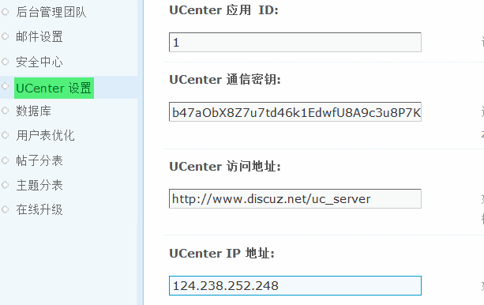

UCenter 设置
UCenter 设置主要设置 Discuz! 与 UCenter 连接的一些信息，本设置在站点安装时自动生成，一般情况下请不要修改，修改前请备份 config 文件夹，以防止修改错误导致站点无法正常运行。
操作路径：【后台】=>【站长】=>【UCenter 设置】
各项目的设置
1、根据 UCenter 中的对应信息，详细设置下面的信息即可，如下图所示：
UCenter 应用 ID：该值为当前站点在 UCenter 的应用 ID，一般情况请不要改动。
UCenter 通信密钥：通信密钥用于在 UCenter 和 Discuz! 之间传输信息的加密，可包含任何字母及数字，请在 UCenter 与 Discuz! 设置完全相同的通讯密钥，以确保两套系统能够正常通信。
UCenter 访问地址：如果您的 UCenter 访问地址发生了改变，请修改此项。不正确的设置可能导致站点功能异常，请小心修改。格式: http://www.sitename.com/uc_server (最后不要加’/’)。
UCenter IP 地址：如果您的服务器无法通过域名访问 UCenter，可以输入 UCenter 服务器的 IP 地址。
2、UCenter 连接方式：请根据您的服务器网络环境选择适当的连接方式。
1)数据库方式：需要您站点可以连接 UCenter 数据库，如下图所示：
UCenter 数据库服务器：可以是本地也可以是远程数据库服务器，如果 MySQL 端口不是默认的 3306，请填写如下形式：127.0.0.1:6033。6033 为 MySQL 端口号。
UCenter 数据库用户名、UCenter 数据库密码、UCenter 数据库名、UCenter 表前缀的填写请按照 UCenter 实际的数据库信息填写。默认情况不用修改。如果要修改可以参考 config/config_ucenter.php 文件。数据库方式需要你站点可以连接 UCenter 数据库。
2)接口方式：UCenter 和 Discuz! 不在同一台服务器则可以选择接口方式，接口方式无需设置其他的选项。
采用接口方式时，站点和 Ucenter 通信采用远程方式，如果你的服务器环境支持，我们推荐你使用它。
3、是否允许其他应用的会员在站点激活：通常情况下，如果会员在其他应用注册了，但是他还不是该站点用户，如果允许这些用户进入站点，请设置“是”。
选择“是”以后，可以选择是否允许直接激活；选择“是”，用户登录即自动激活；选择“否”，允许用户激活，但必须填写注册设置中的必填项。
4、头像调用方式：设置用户头像的调用方式分为动态地址调用头像和静态地址调用头像。